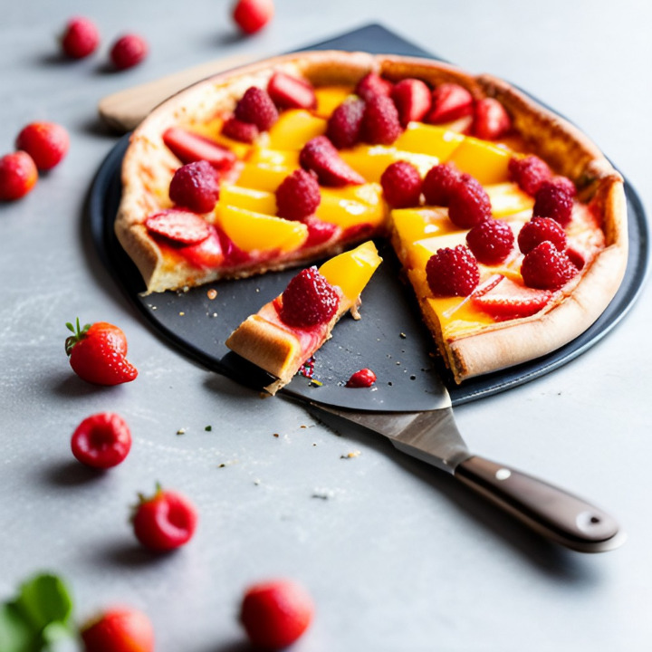
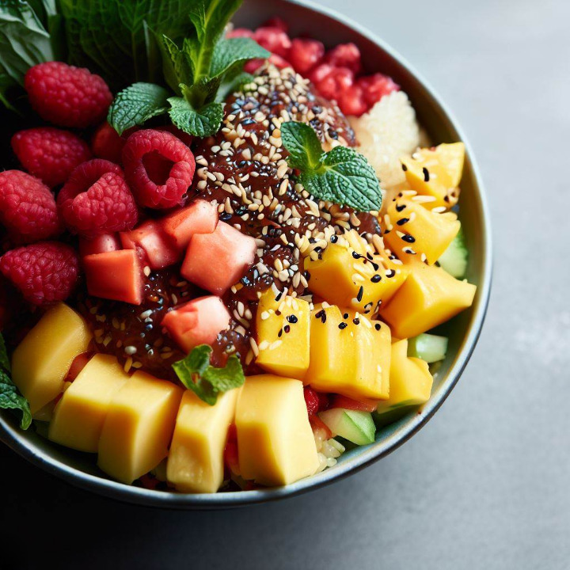

Recettes Végétariennes
Salée
Sucrée
Recettes Vegan
Salée
Sucrée
Salades
Desserts
Le Cuisinier
Recettes végétaliennes sucrées
Champignons farcis à l'ail et aux légumes

Pizza aux fruits

Poke Bowl aux fruits
Galettes de patates douces et de haricots noirs